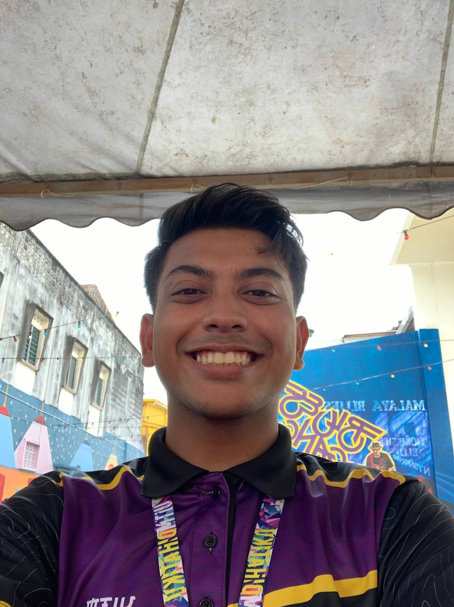
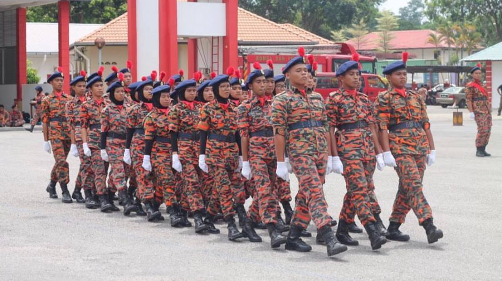
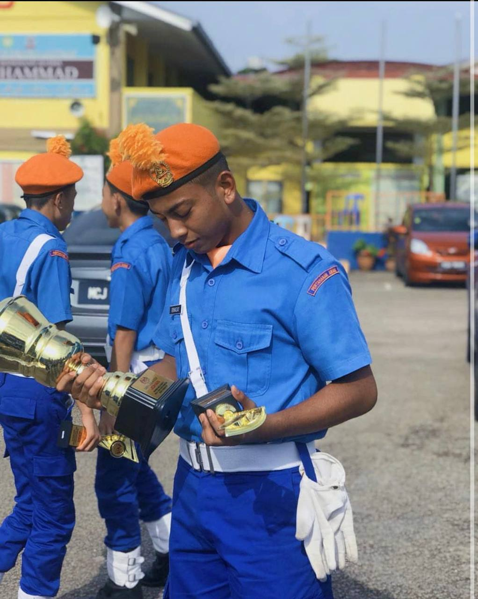
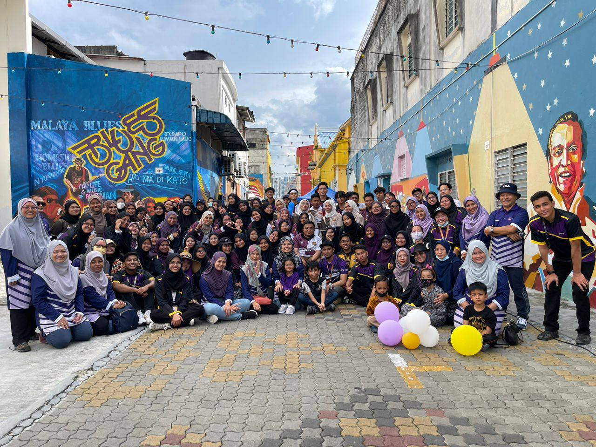
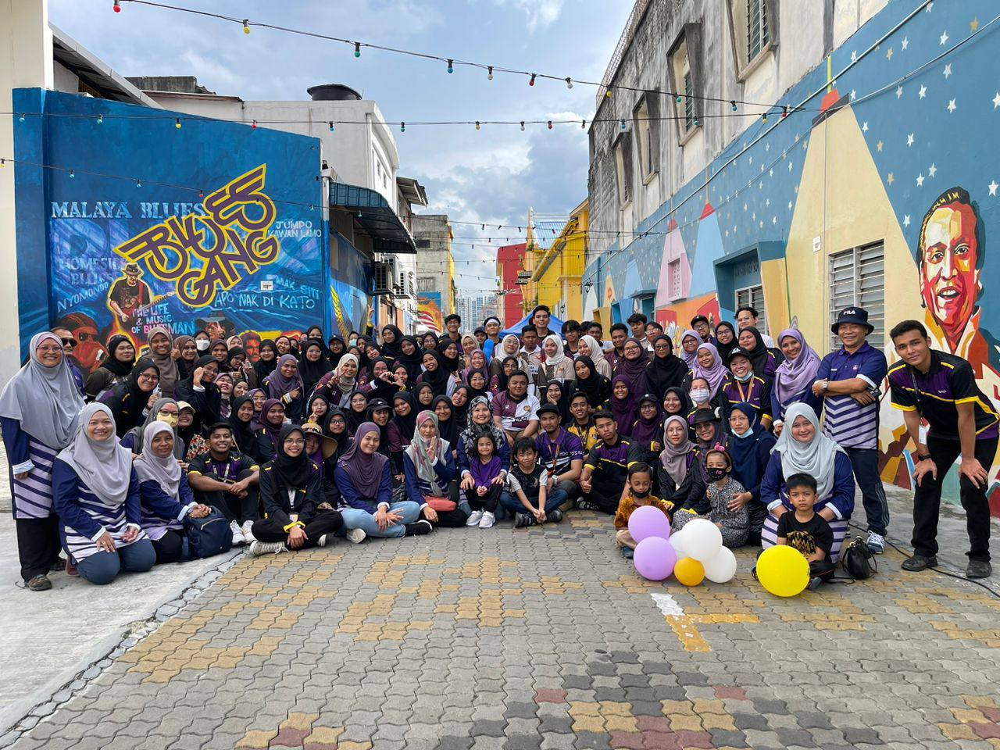
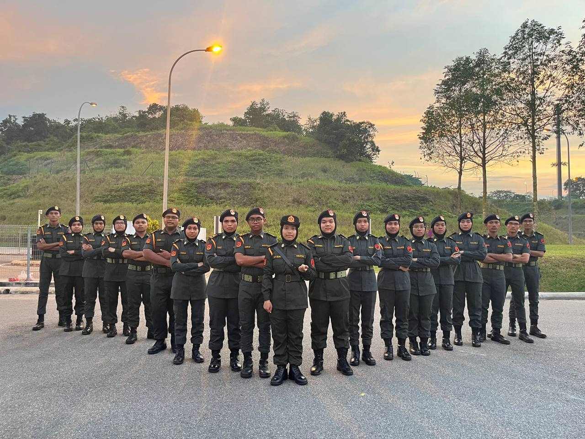
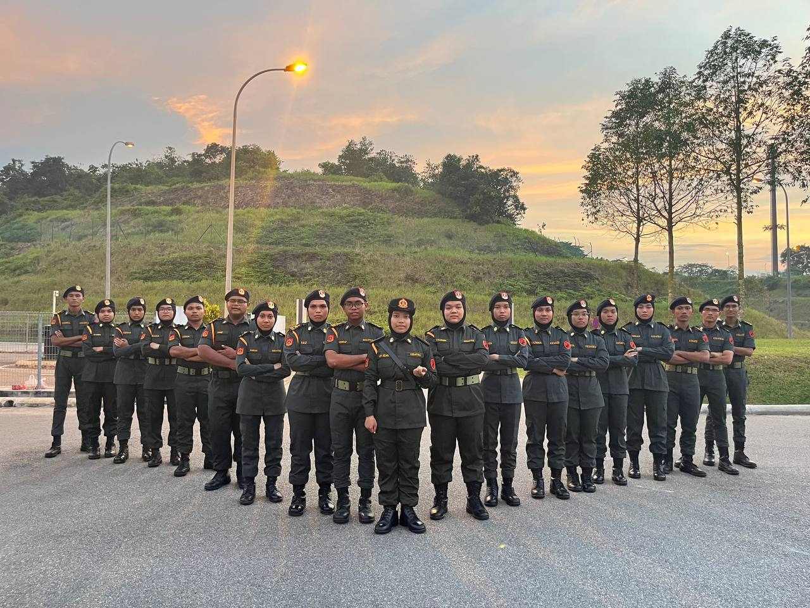

| NAME | MUHAMMAD ROHAIZAT BIN ABDUL RAHMAN |
| AGE | 20 YEARS OLD |
| STUDENT ID | 2020893156 |
| DATE OF BIRTH | 7 MAY 2002 |
| PLACE OF BIRTH | HOSPITAL MELAKA |
| HOME ADRESSS | NO 337-1, JALAN PAYA MENGKUANG 2, BUKIT RAMBAI, 75250, MELAKA |
| GENDER | MALE |
| NATIONALITY | MALAYSIA |
| RACE | ISLAM |
| STUDY | UITM KAMPUS REMBAU |
| roohaizat75@gmail.com | |
| NUMBER PHONE | 0194550047 |
EDUCATION
When I was 5 years old, I enrolled in Tadika Kemas Bukit Rambai and continued my education there until I was 6 years old.
After that, I moved on to Sekolah Kebangsaan Bukit Rambai and completed classes 1 through 6 there.
At the Sekolah Rendah Agama Jaim Bukit Rambai, where I performed my evening studies,
I was able to get a 5A in UPSR and an 8A in UPKK with the assistance of Allah.
Both of these grades were awarded by the school. Following that, I spent form 1 through 5 at
Sekolah Menengah Kebangsaan Agama Sultan Muhammad. I'm giving myself a challenge by
staying away from home and at a hostel instead. My time at SMKA Sultan Muhammad was responsible for
the bulk of my formal education. On the PT3, I was graded with a 7A, however on the SPM, I was only given a 6A.
I was able to gain admission at UITM Kampus Rembau due to the quality of my previous studies,
and I am currently in the last semester of the Diploma in Information Management course.
| TADIKA | 2007-2008 |
| SKBR | 2009-2014 |
| SMKASM | 2015-2019 |
| UITM REMBAU | 2020-NOW |
EXPERIENCE
Despite the fact that I am an introvert, I saw a significant improvement in the quality of my social life after
I started attending high school. At SMKA Sultan Muhammad, I began to take risks. The first challenge I have to overcome is a competition in marching. I have been involved in a variety of different marching activities ever since I was in the third grade.
There are several honours that have been conferred upon me, including:
FAMILY
My father is 66 years old, and his name is Abdul Rahman Bin Mohamad. He was born and raised in Melaka.
My mum is 59-year-old Zainab Binti Uthankanakath Ali Kutty, and she was born in Melaka. I'm the youngest of five siblings.
The first sister, Siti Mastura Binti Abdul Rahman, 31 years old, already married and now she is housewife. The second one is Siti Masrah Binti
Abdul Rahman, 29 Years old, already married and she also housewife. Third sister, Norashema binti Abdul Rahman 27 years old, already married and she
working at Infineon Technologies at Melaka. I also have brother Muhammad
Fitri Bin Abdul Rahman 26 years old, not married yet and he working at Singapore
CONTENT
There are a few artist that i like which are Bruno Mars,
Justin Bierber and also Imsoniacks
They have their own genre such as balada, pop and romantic. i do like listen songs genre rap from K-Clique
This is a few songs that i like
GALLERY



.jpg) 

 
